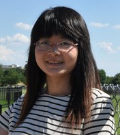
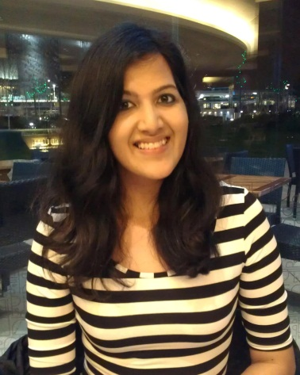
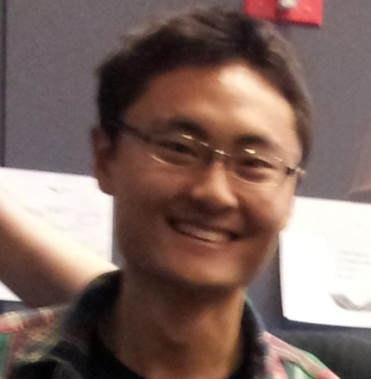
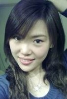
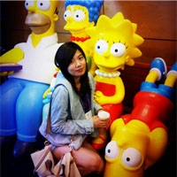
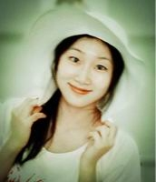

Team

This team is making the an interactive retail experience for Windows Phone. The experience is aiming to showcase the unique features and how personalized Windows Phone is.

Jingying (JJ) is a programmer in the team with a background of Software Engineering. She mainly focus on the backend in this project and involve in the whole process.

Bhavna graduated from the Georgia Institute of Technology with a Bachelor of Science degree in Computer Science and a Certificate in Social & Personality Psychology. Her theoretical knowledge is bolstered by her work in both HCI and Computer Graphics research, and is complemented by her drive to continually create. Bhavna looks forward to ultimately finding a job where she can fulfill her passions for research, technology, and creation, while working with a diverse team of like-minded technologists and artists. Outside of school, Bhavna is a gamer, an avid reader, a frequent concert-goer, and a fan of all kinds of music. She has been trained in Carnatic (Indian Classical) singing since an early age, and enjoys attending live performances, especially those where innovative technologies and methods are used to promote interaction between the performer and the audience. Bhavna is working in programming and research on Up+.http://bhavnam.weebly.com/

He gets a great passion for Windows Phone and he predicts Windows Phone will be the No.1 in the smartphone market in about 3 years. He is taking the job of producing, including the product management and internal communication. And he is trying hard with the programming of the underlying algorithm and design of the data presentation. www.starxingxu.com

Weiwei graduated from Beijing University of Posts and Telecommunications majored in Telecommunication Engineering. With solid theoretical knowledge of both hardware and software, she is a creative and efficient programmer interested in Computer Graphic and Game Development. As a programmer and technical artist on the team, Weiwei focuses on the frontend and is involved in the design process. In her spare time, she is a gamer who like to experience all kinds of games, and she likes traveling a lot. www.whuocmu.com/

Ningyu (Sylvia) Mao is a programmer who majored in Computer Science in Peking University. She also got a bachelor degree in Economics. During her undergraduate life, she especially worked on visualization and visual analytics. She just finished her first year in ETC, where she has the chance working with large range of platforms, such as wii-mote, joystick, HMD, kinect. She is interested in mobile application development and human-computer interaction.

Xiaochen(Sarah) Wang, an energetic and enthusiastic girl, is currently a first year graduate student in ETC. She has an artistic taste of all new emerging things around her. On the other hand, she has a scientist perspective towards affairs happened in her life.She got her Bachelor’s degree in Computer Science and Digital Media Technology from Huazhong Technology of Science and Technology. She loves Computer Graphics and Computer Vision. The love towards games led her to join ETC and she pursuits her dream here.
Zifeng Tian